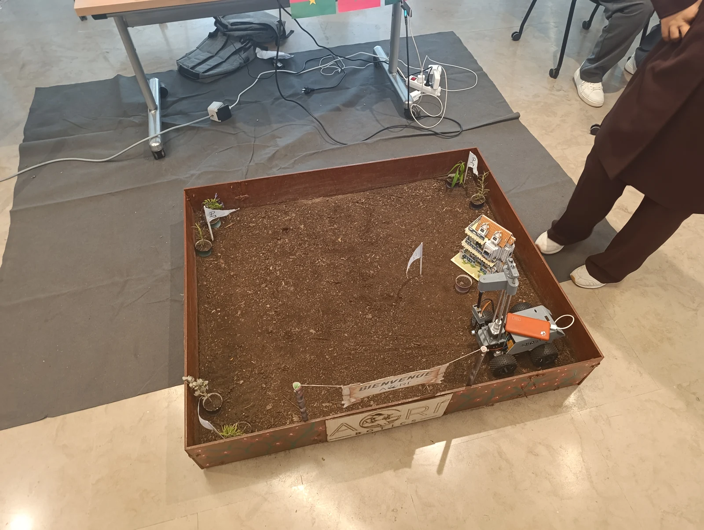
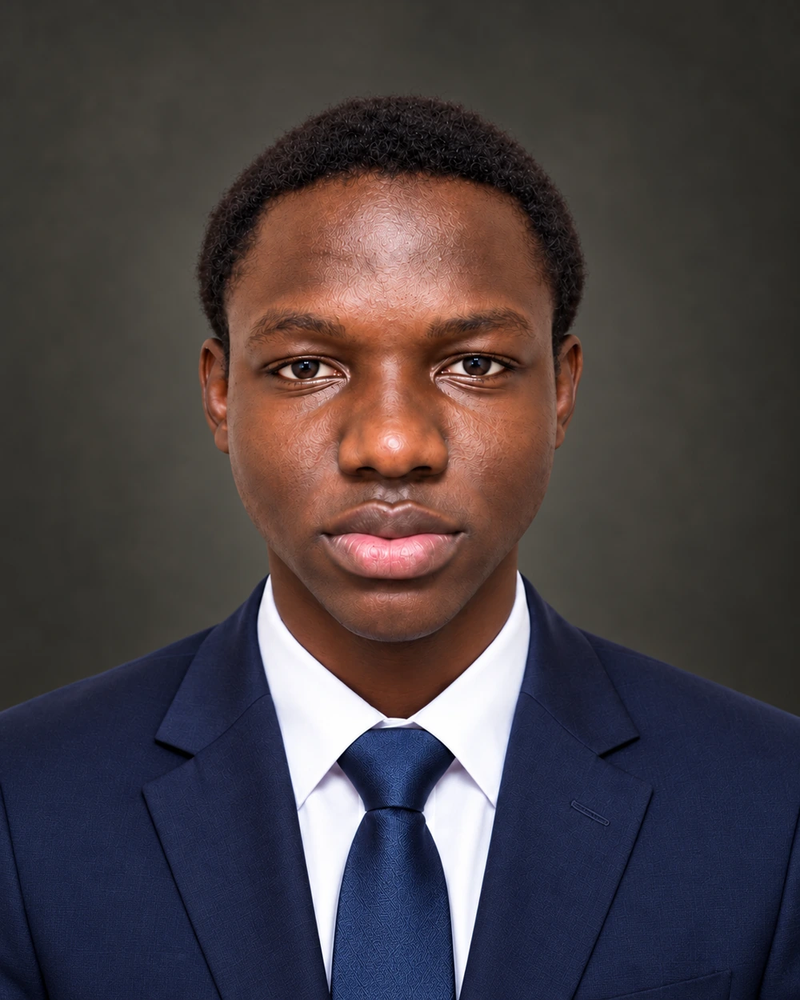
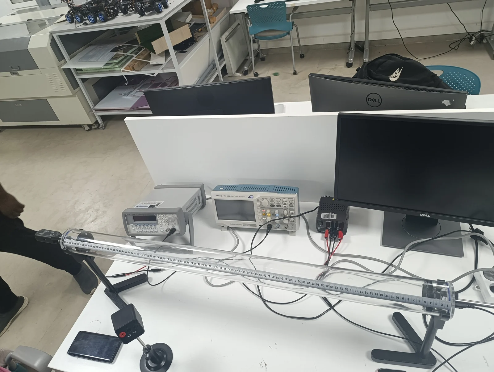
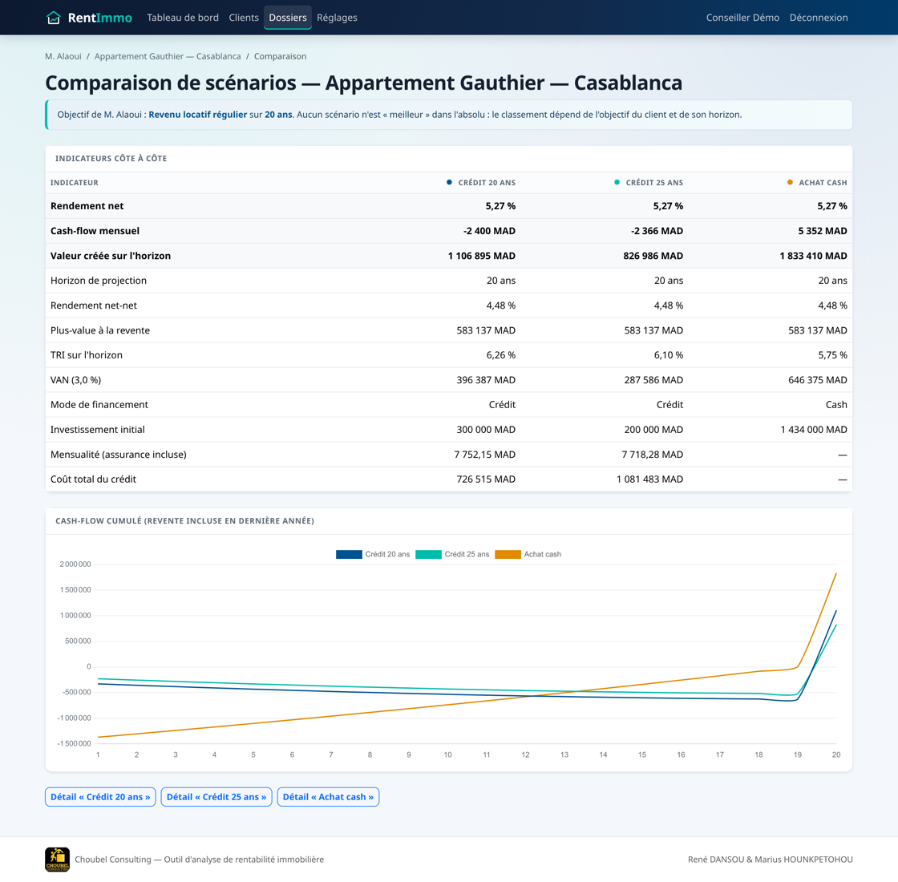

Agri-Botics
Relier un robot, une mission et une carte de décision.
Prototype + simulationEssais physiques et chaîne logicielle documentés séparément.
Projet collectif · Centrale CasablancaMARIUS HOUNKPETOHOU / PORTFOLIO
Élève ingénieur généraliste · Centrale Casablanca
Modéliser, construire, confronter au réel.
J’explore les systèmes complexes, avec l’aéronautique comme horizon.

01 / RÉALISATIONS CHOISIES
Trois projets pour découvrir comment
je passe d’un problème à un résultat.

Relier un robot, une mission et une carte de décision.

Confronter les modèles acoustiques aux mesures.

Transformer des calculs financiers en outil de comparaison.
LE FIL CONDUCTEUR
Comprendre les mécanismes, relier les disciplines et identifier ce qui reste à valider : c’est ce qui rassemble mes projets, du matériau au logiciel.
Découvrir ma démarche ↗Mon mémoire de licence aborde les mécanismes de défaillance et les critères de rupture. Un premier lien entre mécanique et aéronautique.
Synthèse du travail · Mémoire complet non publiéVOIR LE TRAVAIL DE PLUS PRÈS